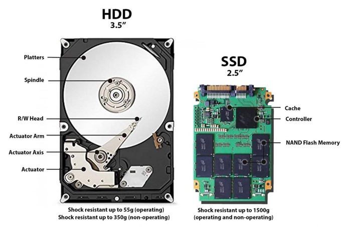

🧩 O acúmulo invisível
Com o tempo, seu computador acumula arquivos temporários, programas desnecessários, atualizações mal otimizadas e até erros no registro do sistema. Tudo isso gera lentidão — mesmo sem você ver.
📦 Programas iniciando junto com o sistema
Softwares como antivírus, atualizadores e assistentes virtuais iniciam automaticamente com o sistema, consumindo memória e processamento logo no boot.
🔁 Atualizações mal feitas
Algumas atualizações do sistema e de programas não substituem arquivos antigos corretamente. Isso pode causar conflitos, travamentos e perda de desempenho.
🧹 Como manter seu PC rápido
- Desinstale programas que não usa
- Desative inicialização automática desnecessária (Gerenciador de Tarefas)
- Limpe arquivos temporários regularmente
- Atualize drivers e o sistema operacional
- Use SSD (muito mais rápido que HD)
💡 Curiosidades
- Um notebook com HDD pode levar 10x mais tempo para iniciar que com SSD
- Programas em segundo plano consomem recursos mesmo sem estar abertos
- Alguns fabricantes colocam *bloatware* (softwares inúteis) de fábrica
🖼️ Exemplo visual
Veja como um SSD pode acelerar drasticamente seu sistema:
